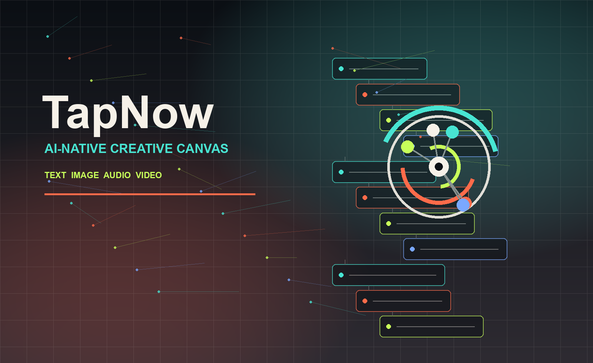

Global frontier models
Work across multiple generation engines instead of shaping every brief around a single model or interface.

Official site
TapNow AI guide
Independent guide to TapNow, the AI creative canvas used to connect text, image, audio, and video workflows for ads, films, social content, and creator production.
This site is an independent keyword guide. Use tapnow.ai for the official product and creator program.
Independent guide
TapNow is positioned publicly as an AI-native creative canvas where teams move from brief to script, frame, edit, and motion output in one place. This page summarizes that positioning and points to the official product.
One canvas for prompt writing, references, generation, editing, and output review across visual workflows.
Tapflow describes the connected path from idea to script, frames, video, and final campaign assets.
TapTV and creator programs signal the community side of TapNow for sharing process and learning repeatable production systems.
Platform
TapNow shows up in search because it presents a visual creation engine for teams and creators who want fewer tool switches and more control from idea to output.
Work across multiple generation engines instead of shaping every brief around a single model or interface.
Move from product idea to ad concept, campaign image, storyboard, or short-form video with a production-first workspace.
Connect prompts, references, scripts, scenes, and outputs without losing the creative thread.
Tapflow
Start with a campaign brief, then expand it into scripts, references, images, video, sound, and finished outputs without leaving the canvas.
Use cases
Generate product-led concepts, campaign images, banners, and short videos for fast testing.
Shape scripts, frames, camera direction, and video generation into a repeatable story process.
Turn one idea into multiple platform-ready visual variations with consistent direction.
Use multimodal models as a studio for exploring images, sound, motion, and new aesthetics.
TapTV and creators
TapNow's public story includes TapTV and creator programs where makers can share process, discover templates, and turn AI video creation into a repeatable practice around repeatable workflows.
FAQ
TapNow is described publicly as an AI-native creative canvas for orchestrating text, image, audio, and video generation in one workspace.
Tapflow is the canvas-style workflow concept: ideas, scripts, references, generated images, generated video, and outputs remain connected.
TapTV is the creator-facing and community-facing layer in TapNow's public positioning, connected to creator programs and shared workflows.
Creators, marketers, e-commerce operators, and visual teams that need to make ads, videos, campaign visuals, or storyboards faster.
No. This is an independent static keyword page that summarizes public TapNow positioning and links to the official website.